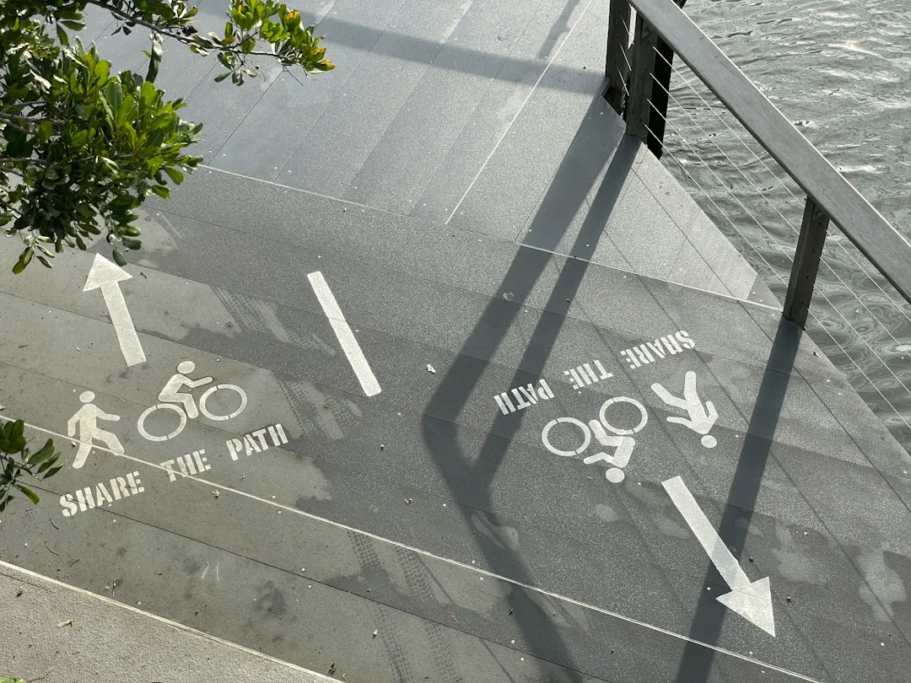

A retaining wall project in Brisbane should begin with the ground being retained, the height change, access and anything above the wall, such as a driveway or another structure. Boulder, sandstone, concrete sleeper and timber sleeper systems suit different garden outcomes. Ask what drainage, removal, disposal, approvals, inspections, path protection and repairs are included. A site assessment may be needed before a firm quote, especially when replacing an old wall or changing garden levels.
For homeowners comparing retaining walls brisbane options, the practical decision is how the wall will manage the ground, water, access and intended use of the garden.
Retaining Walls Brisbane Explained
Boulder Walls Brisbane presents the choice as a project question rather than a material question. A raised garden bed, a level lawn, a replacement for an old wall and a series of usable garden levels can require different approaches. Begin by describing the height change and what you want to do with the space.
Natural boulders can give a planted-garden appearance, while sandstone blocks provide either even rows or a rougher stone finish. Concrete and timber sleepers use posts, connections and drainage as part of the wall system. The visible face is only one part of the job, so compare how each option fits the ground, access route, surrounding garden and future care.
- Record whether the project is new construction, replacement or terracing.
- Identify fences, paths, lawns and established planting that should remain.
- Note anything above the wall, including a driveway or another structure.
Compare the main wall systems
Material selection becomes clearer when the intended garden use and construction requirements are considered together. Boulder walls suit a natural rock treatment with room for larger stones. Sandstone can provide a more consistent face. Concrete sleepers sit between posts, while timber sleepers create a garden-edge appearance that still requires attention to the ground, drainage and future care.
Replacement work has a different scope from a new wall. Removing and disposing of the old structure may be substantial parts of the work, and nearby garden repairs may need to be included. Terraced gardens also need the walls, paths and drainage planned together instead of treating each level as an isolated feature.
| Project situation | Options to discuss | Questions to resolve |
|---|---|---|
| Natural garden appearance | Boulder or sandstone | How the stones fit the available room and garden levels |
| Post and sleeper system | Concrete or timber sleepers | Posts, connections, drainage and future care |
| Existing wall problem | Wall replacement | Removal, disposal, drainage and garden repairs |
| Several usable levels | Terraced garden walls | Walls, paths and drainage as one plan |
Drainage, approvals and existing-wall checks
Water behind a wall needs to be considered in the design. The wall system, ground and lawful outlet all affect the drainage discussion. Gaps between stones do not prove that drainage is adequate, so ask what drainage the quote includes and where water will go. Describe any pooling, staining or soil loss you have observed.
Approval questions should be settled against the full proposal. The source guidance notes that Brisbane City Council lists conditions for work that does not need building approval, and that height is only one consideration. Loads above the wall, nearby buildings or walls, and pool fencing can also matter. A licensed building certifier should check the proposal before anyone treats it as exempt.
An existing wall cannot be fully assessed from a close photograph. Buried footings and drainage may remain hidden. Photos can begin the discussion, while a suitably qualified professional can explain what can be checked and what may require rebuilding or temporary support.
Access and quote details that change the job
Access should be described before a price is treated as meaningful. A wide street does not guarantee a clear route behind the house. Steps, narrow gates, turns and overhead obstructions can affect how materials reach the work area. Wider photos showing the wall, higher ground and route from the street are more useful than a close-up alone.
Ask for the proposal to separate the work into understandable parts. Confirm who handles design, approval, construction and any necessary inspections. Check whether it includes removal and disposal, drainage, protection of paths, repairs after the work and any garden reinstatement. A written list of inclusions and exclusions makes different proposals easier to compare.
For a related perspective on retaining-wall planning and project scope, read this companion retaining-wall planning guide.
Who this guide applies to
This guide is for Brisbane and South East Queensland property owners considering a new retaining wall, a replacement, a raised garden bed, a level lawn or terraced garden levels. It is also relevant when a fence, path, lawn, planting area, driveway or other structure sits close to the proposed work.
It is useful before requesting a callback because the enquiry can include the suburb, approximate dimensions, intended result, access concerns and any prepared plans. You do not need to know the final wall system first. The provider's published guidance says availability, assessment arrangements and quote details are confirmed separately, so the enquiry should describe the actual construction problem rather than assume an outcome.
- Describe the change you want, such as a new level or replacement.
- Show the whole site and the route from the street.
- Discuss materials, access and whether a site assessment is needed.
- Confirm price, inclusions and anticipated start arrangements in writing.
- Describe the change. Explain whether you need a new level, a replacement wall or another way to use the yard.
- Show the whole site. Include the wall area, higher ground and the route from the street, with approximate dimensions where possible.
- Discuss workable options. Confirm material choices, access and whether a site assessment is needed before a firm quote.
- Confirm the proposal. Check the price, inclusions, exclusions, responsibilities and proposed timing in writing.
| Project situation | Options to discuss | Questions to resolve |
|---|---|---|
| Natural garden appearance | Boulder or sandstone | How the stones fit the available room and garden levels |
| Post and sleeper system | Concrete or timber sleepers | Posts, connections, drainage and future care |
| Existing wall problem | Wall replacement | Removal, disposal, drainage and garden repairs |
| Several usable levels | Terraced garden walls | Walls, paths and drainage as one plan |
Common questions
When can a retaining wall avoid building approval? Brisbane City Council lists conditions for work that does not need building approval, but height is only one consideration. Loads above the wall, nearby buildings or walls and pool fencing may also matter, so a licensed building certifier should check the full proposal.
Does a retaining wall need drainage? Water behind the wall needs to be considered in the design. Ask what drainage the quote includes, how the ground and wall system affect it, and where the water will go.
Can an existing wall be assessed from photos? Photos help start the discussion, but they cannot show buried footings or drainage. A suitably qualified professional can explain what remains hidden and whether rebuilding or temporary support needs consideration.
What should be included in a retaining-wall quote? Ask about design, approval, construction, inspections, removal and disposal, drainage, path protection and repairs after the work. Confirm inclusions and exclusions in writing so proposals can be compared.
This guide covers retaining-wall material choices, drainage, approvals, access, replacement work and quote preparation for Brisbane and South East Queensland gardens.